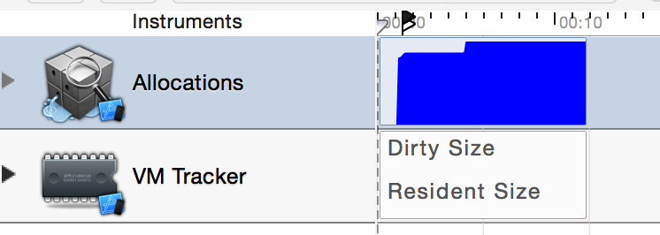

Swift 在内存管理上使用的是自动引用计数 (ARC) 的一套方法，在 ARC 中虽然不需要手动地调用像是 retain，release 或者是 autorelease 这样的方法来管理引用计数，但是这些方法还是都会被调用的 -- 只不过是编译器在编译时在合适的地方帮我们加入了而已。其中 retain 和 release 都很直接，就是将对象的引用计数加一或者减一。但是autorelease 就比较特殊一些，它会将接受该消息的对象放到一个预先建立的自动释放池 (auto release pool) 中，并在 自动释放池收到 drain 消息时将这些对象的引用计数减一，然后将它们从池子中移除 (这一过程形象地称为“抽干池子”)。
在 app 中，整个主线程其实是跑在一个自动释放池里的，并且在每个主 Runloop 结束时进行 drain 操作。这是一种必要的延迟释放的方式，因为我们有时候需要确保在方法内部初始化的生成的对象在被返回后别人还能使用，而不是立即被释放掉。
在 Objective-C 中，建立一个自动释放池的语法很简单，使用 @autoreleasepool 就行了。如果你新建一个 Objective-C 项目，可以看到 main.m 中就有我们刚才说到的整个项目的 autoreleasepool：
int main(int argc, char * argv[]) {
@autoreleasepool {
int retVal = UIApplicationMain(
argc,
argv,
nil,
NSStringFromClass([AppDelegate class]));
return retVal;
}
}
更进一步，其实 @autoreleasepool 在编译时会被展开为 NSAutoreleasePool，并附带 drain 方法的调用。
而在 Swift 项目中，因为有了 @UIApplicationMain，我们不再需要 main 文件和 main 函数，所以原来的整个程序的自动释放池就不存在了。即使我们使用 main.swift 来作为程序的入口时，也是不需要自己再添加自动释放池的。
但是在一种情况下我们还是希望自动释放，那就是在面对在一个方法作用域中要生成大量的 autorelease 对象的时候。在 Swift 1.0 时，我们可以写这样的代码：
func loadBigData() {
if let path = NSBundle.mainBundle()
.pathForResource("big", ofType: "jpg") {
for i in 1...10000 {
let data = NSData.dataWithContentsOfFile(
path, options: nil, error: nil)
NSThread.sleepForTimeInterval(0.5)
}
}
}
dataWithContentsOfFile 返回的是 autorelease 的对象，因为我们一直处在循环中，因此它们将一直没有机会被释放。如果数量太多而且数据太大的时候，很容易因为内存不足而崩溃。在 Instruments 下可以看到内存 alloc 的情况：
这显然是一幅很不妙的情景。在面对这种情况的时候，正确的处理方法是在其中加入一个自动释放池，这样我们就可以在循环进行到某个特定的时候施放内存，保证不会因为内存不足而导致应用崩溃。在 Swift 中我们也是能使用 autoreleasepool 的 -- 虽然语法上略有不同。相比于原来在 Objective-C 中的关键字，现在它变成了一个接受闭包的方法：
func autoreleasepool(code: () -> ())
利用尾随闭包的写法，很容易就能在 Swift 中加入一个类似的自动释放池了：
func loadBigData() {
if let path = NSBundle.mainBundle()
.pathForResource("big", ofType: "jpg") {
for i in 1...10000 {
autoreleasepool {
let data = NSData.dataWithContentsOfFile(
path, options: nil, error: nil)
NSThread.sleepForTimeInterval(0.5)
}
}
}
}
这样改动以后，内存分配就没有什么忧虑了：

这里我们每一次循环都生成了一个自动释放池，虽然可以保证内存使用达到最小，但是释放过于频繁也会带来潜在的性能忧虑。一个折衷的方法是将循环分隔开加入自动释放池，比如每 10 次循环对应一次自动释放，这样能减少带来的性能损失。
其实对于这个特定的例子，我们并不一定需要加入自动释放。在 Swift 中更提倡的是用初始化方法而不是用像上面那样的类方法来生成对象，而且从 Swift 1.1 开始，因为加入了可以返回 nil 的初始化方法，像上面例子中那样的工厂方法都已经从 API 中删除了。今后我们都应该这样写：
let data = NSData(contentsOfFile: path)
使用初始化方法的话，我们就不需要面临自动释放的问题了，每次在超过作用域后，自动内存管理都将为我们处理好内存相关的事情。